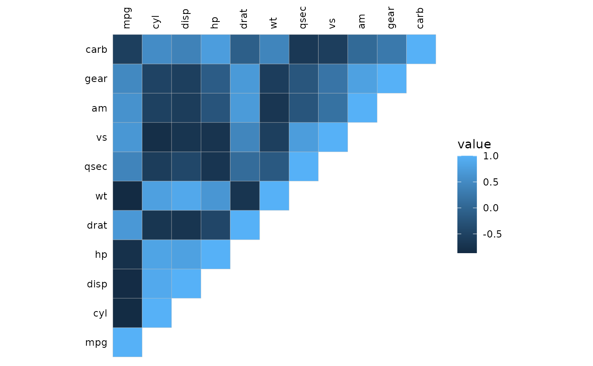
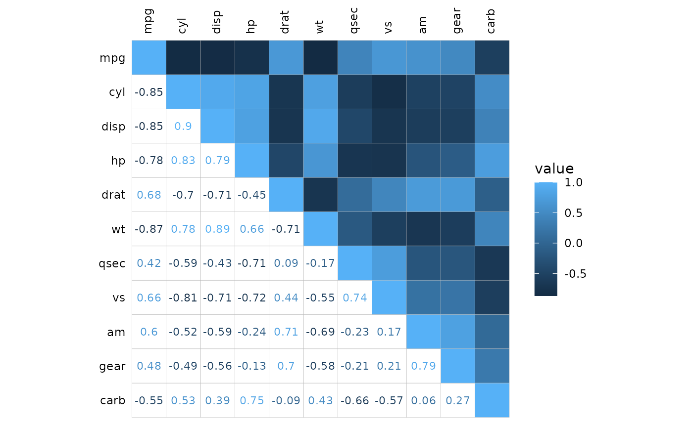
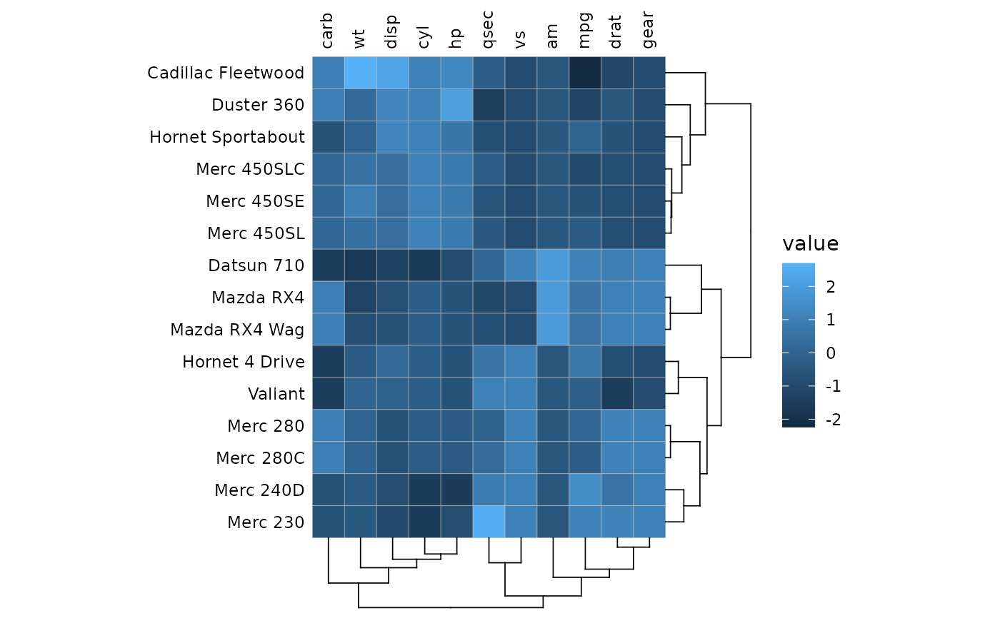
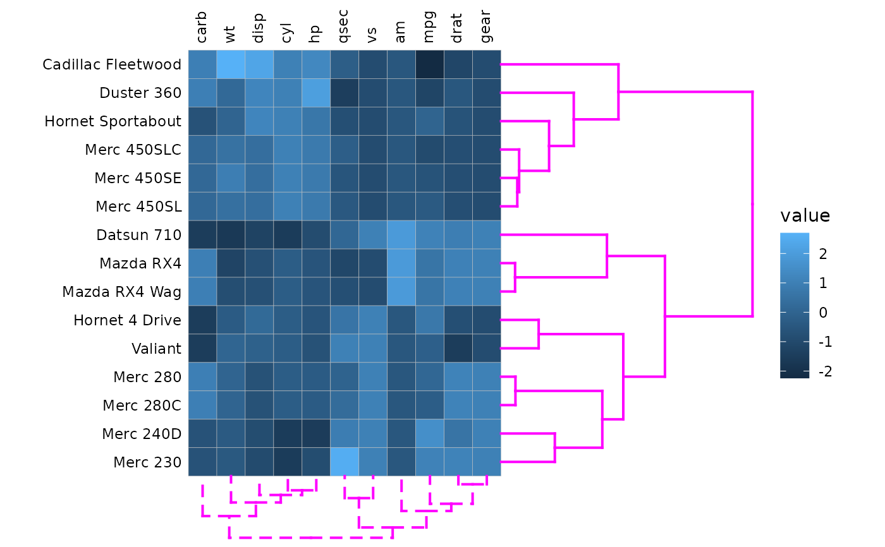
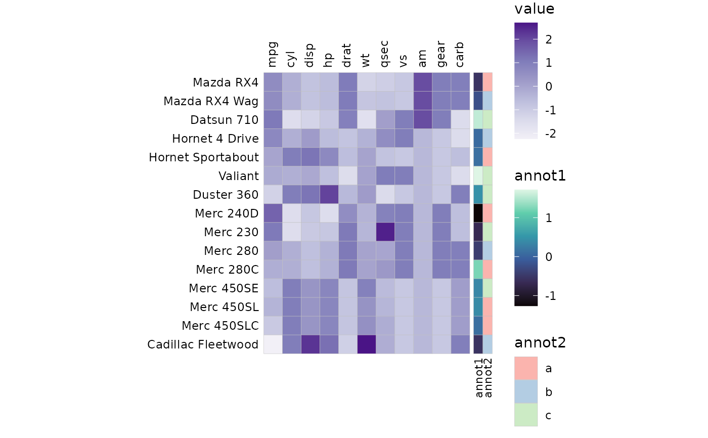
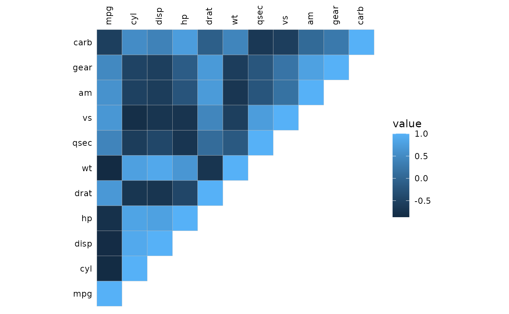
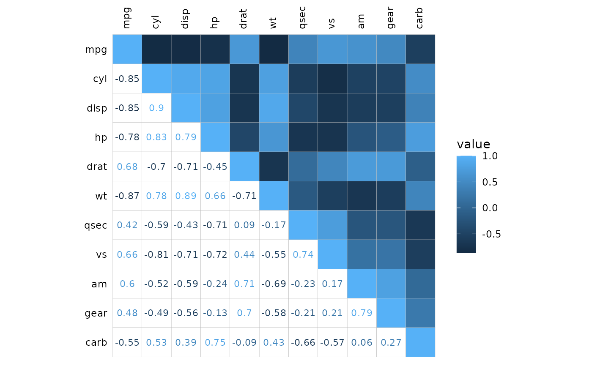
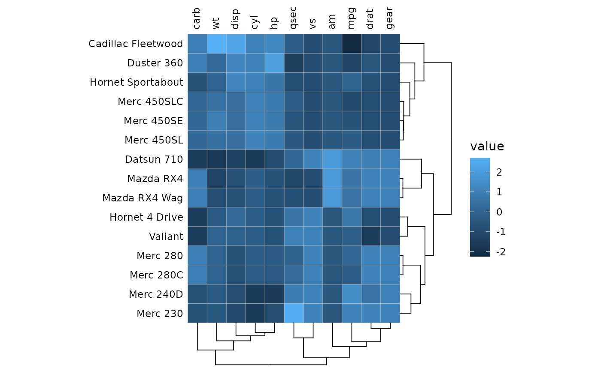
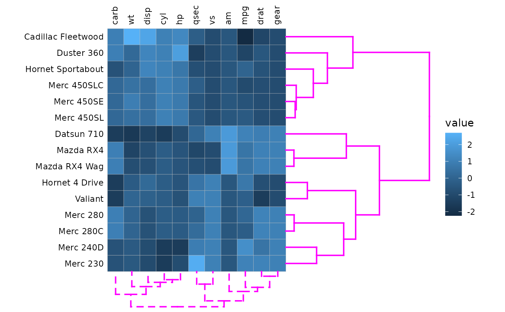
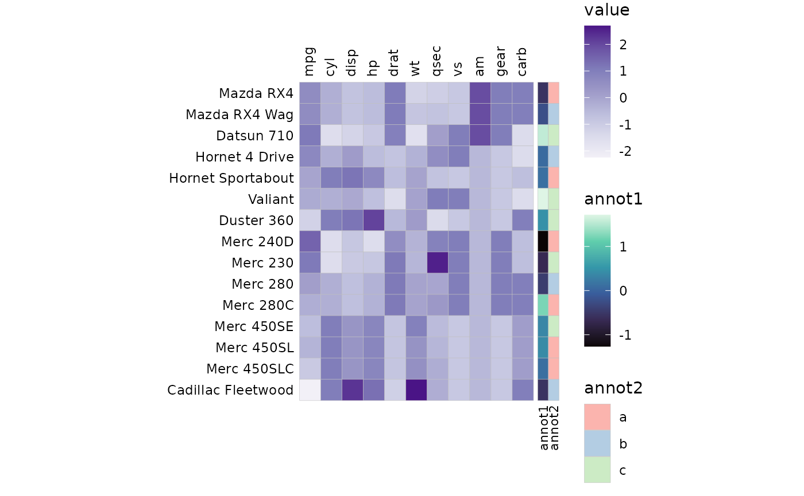

Make a heatmap of a matrix/data frame using ggplot2. Square matrices where the row- and column names are the same can use triangular layouts that either only show one triangle or plot different things in the different triangles.
Usage
gghm(
x,
layout = "full",
mode = if (length(layout) == 1) "heatmap" else c("heatmap", "text"),
scale_data = NULL,
col_scale = NULL,
col_name = "value",
limits = NULL,
bins = NULL,
size_scale = NULL,
size_name = "value",
legend_order = NULL,
include_diag = TRUE,
split_diag = FALSE,
show_names_diag = FALSE,
names_diag_params = NULL,
show_names_x = TRUE,
names_x_side = "top",
show_names_y = TRUE,
names_y_side = "left",
na_col = "grey50",
na_remove = FALSE,
return_data = FALSE,
cell_labels = FALSE,
cell_label_col = "black",
cell_label_size = 3,
cell_label_digits = 2,
border_col = "grey",
border_lwd = 0.1,
border_lty = 1,
cell_bg_col = "white",
cell_bg_alpha = 0,
annot_rows_df = NULL,
annot_cols_df = NULL,
annot_rows_col = NULL,
annot_cols_col = NULL,
annot_rows_side = "right",
annot_cols_side = "bottom",
annot_dist = 0.2,
annot_gap = 0,
annot_size = 0.5,
annot_border_col = if (length(border_col) == 1) border_col else "grey",
annot_border_lwd = if (length(border_lwd) == 1) border_lwd else 0.5,
annot_border_lty = if (length(border_lty) == 1) border_lty else 1,
annot_na_col = na_col,
annot_na_remove = na_remove,
annot_rows_params = NULL,
annot_cols_params = NULL,
show_annot_names = TRUE,
annot_names_size = 3,
annot_rows_names_side = "bottom",
annot_cols_names_side = "left",
annot_rows_names_params = NULL,
annot_cols_names_params = NULL,
annot_rows_name_params = NULL,
annot_cols_name_params = NULL,
cluster_rows = FALSE,
cluster_cols = FALSE,
cluster_distance = "euclidean",
cluster_method = "complete",
show_dend_rows = TRUE,
show_dend_cols = TRUE,
dend_rows_side = "right",
dend_cols_side = "bottom",
dend_col = "black",
dend_dist = 0,
dend_height = 0.3,
dend_lwd = 0.3,
dend_lty = 1,
dend_rows_params = NULL,
dend_cols_params = NULL,
dend_rows_extend = NULL,
dend_cols_extend = NULL,
split_rows = NULL,
split_cols = NULL,
split_rows_side = "right",
split_cols_side = "bottom"
)Arguments
- x
Matrix or data frame in wide format to make a heatmap of. If rownames are present they are used for the y axis labels, otherwise the row number is used. If a column named
.names(containing unique row identifiers) is present it will be used as rownames.- layout
String specifying the layout of the output heatmap. Possible layouts include 'topleft', 'topright', 'bottomleft', 'bottomright', or the 'whole'/'full' heatmap (default and only possible option if the matrix is not square). A combination of the first letters of each word also works (i.e. f, w, tl, tr, bl, br). If layout is of length two with two opposing triangles, a mixed layout will be used. For mixed layouts,
modeneeds a vector of length two (applied in the same order as layout). See details for more information.- mode
A string specifying plotting mode. Possible values are
heatmap/hmfor a normal heatmap, a number from 1 to 25 to draw the corresponding shape,textto write the cell values instead of filling cells (colour scaling with value), andnonefor blank cells.- scale_data
Character string specifying scaling of the matrix. NULL or "none" for no scaling, "rows" for rows, and "columns" for columns. Can also be a substring of the beginning of the words.
- col_scale
Colour scale to use for cells. If NULL, the default ggplot2 scale is used. If a string, the corresponding Brewer or Viridis scale is used. A string with a scale name with "rev_" in the beginning or "_rev" at the end will result in the reversed scale. Can also be a ggplot2 scale object to overwrite the scale. In mixed layouts, a list of two scales can be provided.
- col_name
String to use for the colour scale legend title. Can be two values in mixed layouts for dual scales.
- limits
Numeric vector of length two for the limits of the colour scale. NULL uses the default.
- bins
Number of bins to divide the scale into (if continuous values). A 'double' class value uses 'nice.breaks' to put the breaks at nice numbers which may not result in the specified number of bins. If an integer the number of bins will be prioritised.
- size_scale
ggplot2::scale_size_*call to use for size scaling ifmodeis a number from 1 to 25 (R pch). In mixed layouts, can also be a list of length two containing the two scales to use.- size_name
String to use for the size scale legend title. Can be two values in mixed layouts for dual scales.
- legend_order
Integer vector specifying the order of legends (first value is for the first legend, second for the second, etc). The default (NULL) shows all legends. NAs hide the corresponding legends, a single NA hides all. Ignored for
ggplot2scale objects incol_scaleandsize_scale.- include_diag
Logical indicating if the diagonal cells (of a square matrix with identical dimnames) should be plotted. Mostly only useful for getting a cleaner look with symmetric correlation matrices with triangular layouts, where the diagonal is known to be 1.
- split_diag
Logical indicating if the diagonal cells should be drawn as triangles, splitting the diagonal in two.
- show_names_diag
Logical indicating if names should be written in the diagonal cells.
- names_diag_params
List with named parameters (such as size, angle, etc) passed on to geom_text when writing the column names in the diagonal.
- show_names_x, show_names_y
Logical indicating if names should be written on the x and y axes. Labels can be customised using
ggplot2::theme()on the output plot.- names_x_side
String specifying position of the x axis names ("top" or "bottom").
- names_y_side
String specifying position of the y axis names ("left" or "right").
- na_col
Colour to use for cells with NA (both main heatmap and annotation).
- na_remove
Logical indicating if NA values in the heatmap should be omitted (meaning no cell border is drawn). If NAs are kept, the fill colour can be set in the
ggplot2scale.- return_data
Logical indicating if the data used for plotting and clustering results should be returned.
- cell_labels
Logical specifying if the cells should be labelled with the values. Alternatively, a matrix or data frame with the same shape and dimnames as
xcontaining values to write in the cells. If mode istext, the cell label colours will scale with the cell values andcell_label_colis ignored.- cell_label_col
Colour to use for cell labels, passed to
ggplot2::geom_text().- cell_label_size
Size of cell labels, used as the
sizeargument inggplot2::geom_text().- cell_label_digits
Number of digits to display when cells are labelled (if numeric values). Default is 2, passed to
base::round(). NULL for no rounding.- border_col
Colour of cell borders. If
modeis not a number,border_colcan be set to NA to remove borders completely.- border_lwd
Size of cell borders. If
modeis a number,border_colcan be set to 0 to remove borders.- border_lty
Line type of cell borders. Either a number or its corresponding name, or a string of length 2, 4, 6, or 8. See 'lty' of
graphics::par()for details. Not supported for numericmode.- cell_bg_col
Colour to use for cell backgrounds in modes 'text' and 'none'.
- cell_bg_alpha
Alpha for cell colours in modes 'text' and 'none'.
- annot_rows_df, annot_cols_df
Data frame for row and column annotations. The names of the columns in the data must be included, either as row names or in a column named
.names. Each other column specifies an annotation where the column name will be used as the annotation name (in the legend and next to the annotation). Numeric columns will use a continuous colour scale while factor or character columns use discrete scales.- annot_rows_col, annot_cols_col
Named list for row and column annotation colour scales. The names should specify which annotation each scale applies to. Elements can be strings or ggplot2 "Scale" class objects. If a string, it is used as the brewer palette or viridis option. If a scale object it is used as is, allowing more flexibility. This may change the order that legends are drawn in, specify order using the
guideargument in theggplot2scale function.- annot_rows_side
String specifying which side row annotation should be drawn ('left' or 'right', defaults to 'left').
- annot_cols_side
String specifying which side column annotation should be drawn ('bottom' or 'top', defaults to 'bottom').
- annot_dist
Distance between heatmap and first annotation cell where 1 is the size of one heatmap cell. Used for both row and column annotation.
- annot_gap
Distance between each annotation where 1 is the size of one heatmap cell. Used for both row and column annotation.
- annot_size
Size (width for row annotation, height for column annotation) of annotation cells compared to a heatmap cell. Used for both row and column annotation.
- annot_border_col
Colour of cell borders in annotation. By default it is the same as
border_colof the main heatmap if it is of length 1, otherwise uses default (grey).- annot_border_lwd
Line width of cell borders in annotation. By default it is the same as
border_lwdof the main heatmap if it is of length 1, otherwise uses default (0.5).- annot_border_lty
Line type of cell borders in annotation. By default it is the same as
border_ltyof the main heatmap if it is of length 1, otherwise uses default (solid).- annot_na_col
Colour to use for NA values in annotations. Annotation-specific colour can be set in the ggplot2 scales in the
annot_*_fillarguments.- annot_na_remove
Logical indicating if NAs in the annotations should be removed (producing empty spaces).
- annot_rows_params, annot_cols_params
Named list with parameters for row and column annotations to overwrite the defaults set by the
annot_*arguments, each name corresponding to the*part (see details for more information).- show_annot_names
Logical controlling if names of annotations should be shown in the drawing area.
- annot_names_size
Size of annotation names.
- annot_rows_names_side
String specifying which side the row annotation names should be on. Either "top" or "bottom".
- annot_cols_names_side
String specifying which side the column annotation names should be on. Either "left" or "right".
- annot_rows_names_params, annot_cols_names_params
Named list of parameters for row and column annotation names. Given to
ggplot2::geom_text().- annot_rows_name_params, annot_cols_name_params
Deprecated and kept for backward compatibility. Named list of parameters given to
grid::textGrob()for annotation names. Does not work well with heatmap splits.- cluster_rows, cluster_cols
Logical indicating if rows or columns should be clustered. Can also be
hclustordendrogramobjects.- cluster_distance
String with the distance metric to use for clustering, given to
stats::dist().- cluster_method
String with the clustering method to use, given to
stats::hclust().- show_dend_rows, show_dend_cols
Logical indicating if a dendrogram should be drawn for the rows or columns.
- dend_rows_side
Which side to draw the row dendrogram on ('left' or 'right', defaults to 'left').
- dend_cols_side
Which side to draw the column dendrogram on ('bottom' or 'top', defaults to 'bottom').
- dend_col
Colour to use for dendrogram lines, applied to both row and column dendrograms.
- dend_dist
Distance from heatmap (or annotation) to leaves of dendrogram, measured in heatmap cells (1 is the size of one cell).
- dend_height
Number by which to scale dendrogram height, applied to both row and column dendrograms.
- dend_lwd
Linewidth of dendrogram lines, applied to both row and column dendrograms.
- dend_lty
Dendrogram line type, applied to both row and column dendrograms.
- dend_rows_params, dend_cols_params
Named list for row or column dendrogram parameters to overwrite common parameter values. See details for more information.
- dend_rows_extend, dend_cols_extend
Named list or functional sequence for specifying
dendextendfunctions to apply to the row or column dendrogram. See details for usage.- split_rows, split_cols
Vectors for splitting the rows and columns into facets. Can be a numeric vector shorter than the number of rows/columns to split the heatmap after those indices, or a vector of the same length as the number of rows/columns containing the facet memberships. In the latter case names can be used to match with rows/columns. Alternatively, if clustering is applied a single numeric value is accepted for the number of clusters to divide the plot into.
- split_rows_side, split_cols_side
Which side the row/column facet strips should be drawn on ('left'/'right', 'top'/'bottom').
Value
The heatmap as a ggplot object.
If return_data is TRUE the output is a list containing the plot (named 'plot'),
the plotting data ('plot_data', with factor columns 'row' and 'col', a column 'value' containing the cell values, and 'layout' which part of the heatmap each cell belongs to),
and the result of the clustering ('row_clustering' and/or 'col_clustering).
Details
When using mixed layouts (layout is length two), mode needs to be length two as well, specifying the mode to use in each triangle.
The cell_label_* and border_* arguments can all be length one to apply to the whole heatmap, length two vectors to apply to each triangle,
or lists of length two, each element containing one value (apply to whole triangle) or a value per cell (apply cell-wise in triangle).
cell_labels can also be specified per triangle, either as a logical vector of length two, or a list of length two containing a mix of
logicals and matrices/data frames.
It is also possible to provide two scales for filling or colouring the triangles differently.
In this case the col_scale must be one character value (scale used for both triangles) or NULL or a list of length two
containing the scales to use (character or scale object, or NULL for default). size_scale works in the same way (but takes no character values).
In addition, the scale-modifying arguments bins, na_col and limits can also be specified per triangle. limits must be a list of length two (or one) where each
element is a numeric vector of length two.
The annotation parameter arguments annot_rows_params and annot_cols_params should be named lists, where the possible options correspond to
the different annot_* arguments. The possible options are "dist" (distance between heatmap and annotation), "gap" (distance between annotations),
"size" (cell size), "show_names" (logical, if the annotation names should be displayed), "border_col" (colour of border) and "border_lwd" (border line width).
Any unused options will use the defaults set by the annot_* arguments.
The dendrogram parameters arguments dend_rows_params and dend_cols_params should be named lists, analogous to the annotation parameter arguments. Possible options are
"col" (line colour), "dist" (distance from heatmap to dendrogram), "height" (height scaling), "lwd" (line width), and "lty" (line type).
The dend_rows_extend and dend_cols_extend arguments make it possible to customise the dendrograms using the dendextend package.
The argument should be a named list, each element named after the dendextend function to use (consecutive usage of the set function
is supported due to duplicate list names being possible). Each element should contain any arguments given to the dendextend function,
such as the what argument used in the set function. Alternatively, dendextend functions can be provided in a functional sequence ("fseq" object)
by piping together functions using the %>% pipe. Functions modifying the labels do not work as the dendrogram labels are not displayed (they are in the axis text).
As dendextend::as.ggdend() is used for conversion of the dendrogram, anything not supported by as.ggdend() will not work (such as "nodes_bg" or "rect.dendrogram").
See examples and the clustering article for example usage.
Examples
library(ggplot2)
# Use part of the mtcars data (for visibility)
hm_in <- mtcars[1:15, ]
# Basic usage
gghm(hm_in)
 # Different layout (using a symmetric matrix)
gghm(cor(mtcars), layout = "tl")

# Mixed layouts
gghm(cor(mtcars), layout = c("tr", "bl"),
# Hide one of the legends
legend_order = c(1, NA))

# With clustering
gghm(scale(hm_in), cluster_rows = TRUE, cluster_cols = TRUE)

# Adjusting cluster dendrograms using common and specific options
gghm(scale(hm_in), cluster_rows = TRUE, cluster_cols = TRUE,
# Common options
dend_lwd = 0.7, dend_col = "magenta",
# Specific options
dend_rows_params = list(height = 1), dend_cols_params = list(lty = 2))

# With annotation and specifying colour scales
set.seed(123)
annot_rows <- data.frame(.names = rownames(hm_in),
annot1 = rnorm(nrow(hm_in)),
annot2 = sample(letters[1:3], nrow(hm_in), TRUE))
# Specify colour scale for one of the annotations (viridis mako)
annot_fill <- list(annot1 = "G")
gghm(scale(hm_in),
# Change colours of heatmap (Brewer Purples)
col_scale = "Purples",
annot_rows_df = annot_rows, annot_rows_col = annot_fill) +
# Use ggplot2::theme to adjust margins to fit the annotation names
theme(plot.margin = margin(30, 10, 60, 20))
# Using the dend_*_extend arguments
gghm(scale(hm_in), cluster_rows = TRUE, dend_rows_extend =
list("set" = list("branches_lty", c(1, 2, 3)),
# Empty list element (or NULL) if no arguments to be given
"highlight_branches_col" = list()))

# Different layout (using a symmetric matrix)
gghm(cor(mtcars), layout = "tl")

# Mixed layouts
gghm(cor(mtcars), layout = c("tr", "bl"),
# Hide one of the legends
legend_order = c(1, NA))

# With clustering
gghm(scale(hm_in), cluster_rows = TRUE, cluster_cols = TRUE)

# Adjusting cluster dendrograms using common and specific options
gghm(scale(hm_in), cluster_rows = TRUE, cluster_cols = TRUE,
# Common options
dend_lwd = 0.7, dend_col = "magenta",
# Specific options
dend_rows_params = list(height = 1), dend_cols_params = list(lty = 2))

# With annotation and specifying colour scales
set.seed(123)
annot_rows <- data.frame(.names = rownames(hm_in),
annot1 = rnorm(nrow(hm_in)),
annot2 = sample(letters[1:3], nrow(hm_in), TRUE))
# Specify colour scale for one of the annotations (viridis mako)
annot_fill <- list(annot1 = "G")
gghm(scale(hm_in),
# Change colours of heatmap (Brewer Purples)
col_scale = "Purples",
annot_rows_df = annot_rows, annot_rows_col = annot_fill) +
# Use ggplot2::theme to adjust margins to fit the annotation names
theme(plot.margin = margin(30, 10, 60, 20))
# Using the dend_*_extend arguments
gghm(scale(hm_in), cluster_rows = TRUE, dend_rows_extend =
list("set" = list("branches_lty", c(1, 2, 3)),
# Empty list element (or NULL) if no arguments to be given
"highlight_branches_col" = list()))
